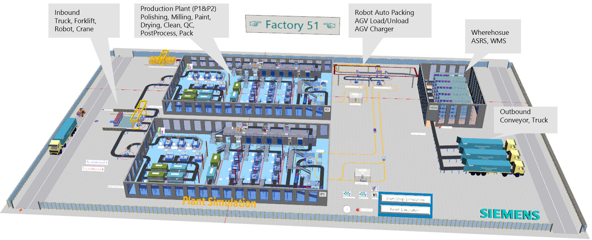
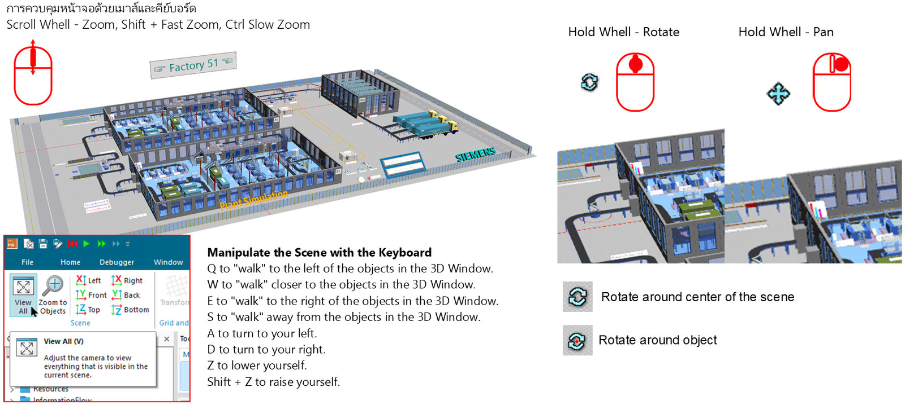
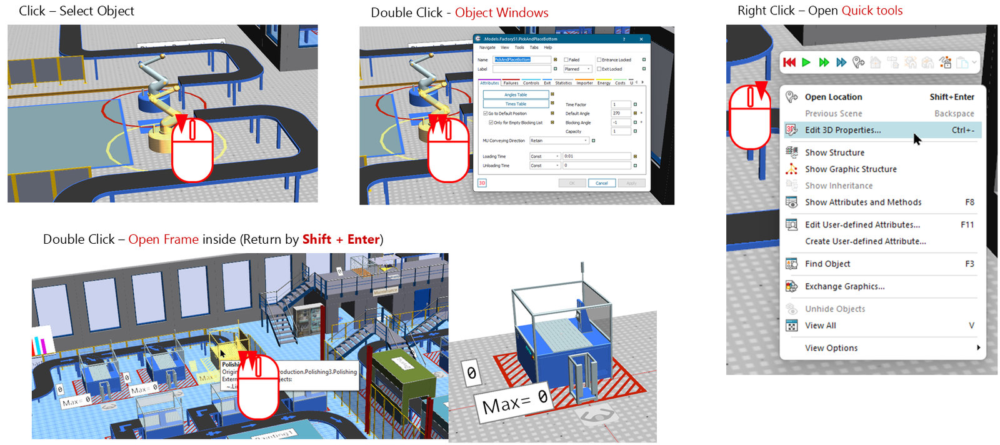
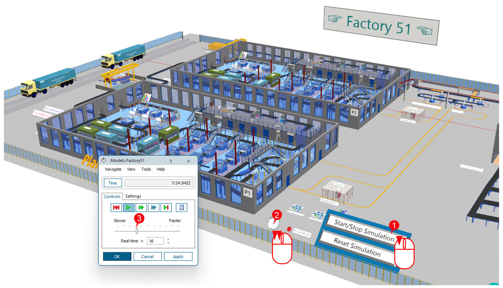

2. โรงงานตัวอย่าง Factory 51
วัตถุประสงค์การเรียนรู้
- เปิด Start Page และเปิดโมเดลตัวอย่าง Factory 51 ได้ด้วยตัวเอง
- ซูม เลื่อน หมุนมุมมอง 3D และโต้ตอบกับวัตถุด้วยคลิก / ดับเบิลคลิก / คลิกขวาได้
- เปิด Frame ด้านในแล้วกลับออกมา และสั่ง Start / Reset / ปรับความเร็วผ่าน EventController ได้
โมเดลตัวอย่างตัวแรก — ยังไม่ต้องสร้างอะไรเอง แค่เปิดโรงงานตัวอย่าง Factory 51 ที่ติดมากับโปรแกรม เพื่อฝึกใช้หน้าจอ ควบคุมมุมมอง 3D โต้ตอบกับวัตถุ และสั่งรันซิมูเลชัน ทั้งหมด 7 ขั้นตอน (ถ้ายังไม่รู้ว่า Plant Simulation และ DES คืออะไร อ่าน บทนำ ก่อน) แล้วต่อด้วยโมเดลตัวอย่างตัวที่สอง Small Parts Production
Factory51.spp (อยู่ใน Examples\Demo ของโฟลเดอร์ติดตั้ง)
— ใช้ Student License ได้ โดยเปิดแบบ Viewer · ผลที่วัดได้ใน 2606: มีรถบรรทุกเข้ามา 5 คัน ภายในเวลาจำลอง 48:40 นาที
ภาพรวม 7 ขั้นตอน
| ขั้น | หัวข้อ | ทำอะไร |
|---|---|---|
| 1 | เปิด Start Page | Window → Start Page |
| 2 | Example Models | เลือก Factory 51 |
| 3 | รู้จักโรงงาน | รับของ ผลิต คลัง ส่งของ |
| 4 | ควบคุมมุมมอง 3D | ซูม เลื่อน หมุน |
| 5 | คลิก / ดับเบิลคลิก / คลิกขวา | เลือกวัตถุ เปิดหน้าต่าง และ Quick tools |
| 6 | เปิด Frame ด้านใน | เข้า-ออก Frame P1 |
| 7 | EventController | Start / Reset / ความเร็ว |
ขั้นที่ 1: เปิด Start Page
- 1เปิด Plant Simulation 2606 แล้วคลิกแท็บ
Window - 2คลิก
Start Page(ปกติจะขึ้นเองตอนเปิดโปรแกรม) - 3ในกลุ่ม
Getting StartedคลิกExample Models
ขั้นที่ 2: เปิดโมเดลตัวอย่าง Factory 51
- 1คลิก
Factory 51ในหน้าต่าง Example Models - 2โมเดลจะอยู่ใน Class Library →
Models → Factory51 - 3แถบ The model contains outdated libraries กด
Xปิดได้ บทนี้ไม่ต้องอัปเดต - 4โมเดลเปิดในหน้าต่าง 3D (แท็บล่างชื่อ
3D.Models.Factory51) - 52606 มีตัวอย่างเพิ่ม เช่น Python GA Demo (ดูบท Python GA Demo) และ Standard Object Examples
Yes เพื่อเปิดแบบ Viewer
(ดูและรันได้ แต่บันทึกการแก้ไขไม่ได้)
Factory 51 — Overview

ขั้นที่ 3: รู้จัก Factory 51 — ระบบทั้งโรงงานใน 3D
- 1Inbound — รถบรรทุก โฟล์คลิฟต์ หุ่นยนต์ เครน
- 2P1 / P2 — โรงผลิต: ขัด กัด พ่นสี อบ ล้าง QC แพ็ก (Polishing, Milling, Paint, Drying, Clean, QC, PostProcess, Pack)
- 3AGV — ขนส่งด้วย AGV + จุดชาร์จ (AGV Load/Unload, AGV Charger, Robot Auto Packing)
- 4คลัง HBW — คลังสินค้าอัตโนมัติ (ASRS, WMS)
- 5Outbound — สายพาน + รถบรรทุกส่งของ
ขั้นที่ 4: ควบคุมมุมมอง 3D ด้วยเมาส์
- 1หมุนล้อเมาส์ = ซูมเข้า-ออก (
Shiftเร็ว ×10,Ctrlช้า ×0.1) - 2คลิกขวาค้างแล้วลาก = เลื่อนฉาก (Pan) — หรือกดล้อค้างแล้วลาก
- 3
Ctrl+ คลิกขวาค้างแล้วลาก = หมุนฉาก — หรือกดซ้าย+ขวาค้าง - 4กด
V= View All เห็นทั้งฉาก
V จะไม่คืนมุมกล้อง — ให้ใช้แท็บ View
(From Top / Front) หรือเปิดโมเดลใหม่
ควบคุมฉากด้วยเมาส์และคีย์บอร์ด

| ปุ่ม | ผลลัพธ์ |
|---|---|
W / S | เดินเข้าใกล้ / ถอยออกจากวัตถุในหน้าต่าง 3D |
Q / E | เดินไปทางซ้าย / ทางขวา |
A / D | หันซ้าย / หันขวา |
Z / Shift + Z | ลดระดับตัวเองลง / ยกตัวเองขึ้น |
การหมุนมี 2 แบบ: Rotate around center of the scene (หมุนรอบกลางฉาก) และ Rotate around object (หมุนรอบวัตถุ)
Object Windows, Open Frame และ Quick tools

| เมาส์ | ผลลัพธ์ |
|---|---|
| Click | Select Object — เลือกวัตถุ |
| Double Click (วัตถุทั่วไป) | Object Windows — เปิดหน้าต่างตั้งค่าของวัตถุ |
| Double Click (วัตถุที่เป็น Frame) | Open Frame inside — เปิด Frame ด้านใน (กลับด้วย Shift + Enter) |
| Right Click | Open Quick tools — แถบปุ่มและเมนูลัด |
Time-Oriented กับ Event-Controlled Simulation
Plant Simulation เป็นโปรแกรมจำลองแบบ discrete, event-controlled — โปรแกรมตรวจสอบเฉพาะ "จุดเวลาที่มีเหตุการณ์เกิดขึ้น" ในโมเดลเท่านั้น ไม่ได้คำนวณทุกช่วงเวลาต่อเนื่องแบบ Time-oriented และควบคุมการรันผ่านวัตถุ EventController (รายละเอียดในขั้นที่ 7)

- 1
Start/Stop Simulation— ปุ่มในฉาก เริ่ม / หยุด - 2ดับเบิลคลิกนาฬิกา = Open EventController
- 3แถบ
Slower/Fasterในหน้าต่าง EventController
ขั้นที่ 5: คลิก ดับเบิลคลิก และคลิกขวาที่วัตถุ

- 1คลิก = เลือกวัตถุ (ขึ้นสีเหลือง) — ในภาพคือสายพาน
Line10 - 2ดับเบิลคลิก = เปิดหน้าต่างของวัตถุ (ตั้งค่า เวลา เสีย ฯลฯ)
- 3คลิกขวา = Quick tools: แถบปุ่ม Start / Stop / Reset ด้านบน
- 4เมนูลัด เช่น
Open(Enter),Show Statistics Report(F6),Show Attributes and Methods(F8)
ขั้นที่ 6: เปิด Frame ด้านใน และกลับออกมา

- 1ดับเบิลคลิก วัตถุในโรงผลิต (เช่นบูธขัดผิวใน P1) → เปิด Frame
P1แยกออกมา - 2แท็บล่างเปลี่ยนเป็น
3D.Models.Factory51.P1 - 3กลับ Frame หลัก:
Shift + Enterหรือคลิกขวาที่ว่าง →Open Location - 4
Backspace= Previous Scene (มุมมองก่อนหน้า)
ขั้นที่ 7: EventController — เริ่ม หยุด รีเซ็ต และความเร็ว
- 1คลิก
Start/Stop Simulation(ปุ่มในฉาก) เพื่อเริ่ม / หยุด - 2
Reset Simulation= เวลากลับไป 0 - 3ดับเบิลคลิกนาฬิกา EventController
- 4
Time= เวลาจำลองตอนนี้ (48:40) - 5แถบ
Slower/Fasterปรับความเร็ว - 6
Real-time × 3= เร็วกว่าเวลาจริง 3 เท่า
แบบฝึก: หา Beer room ใน Factory 51
ฝึกซูม เลื่อน และหมุนมุมมองให้คล่อง — ในโรงงานมีห้องเล็กๆ ซ่อนอยู่ ลองหาเองก่อนแล้วค่อยดูเฉลย
ดูเฉลย
- 1ซูมเข้าโรงผลิต P1 มองใต้ชั้นลอย (แถวป้าย Maintenance / Bathroom)
- 2ประตู Beer อยู่ข้างห้อง Bathroom
ปัญหาที่พบบ่อย และสิ่งที่ต่างใน 2606
| อาการ / จุดที่ต่าง | วิธีแก้ / คำอธิบาย |
|---|---|
| Student License: เกิน 80 objects | กด Yes เพื่อเปิดแบบ Viewer (ดูและรันได้ แต่บันทึกการแก้ไขไม่ได้) |
| กดล้อค้างแล้วไม่หมุน | 2606: Ctrl + คลิกขวาค้างลาก = หมุน, กดล้อค้าง = เลื่อน |
| หมุนจนมุมกล้องเพี้ยน | กด V ไม่คืนมุม → แท็บ View: From Top / Front หรือเปิดโมเดลใหม่ |
| ป้ายชื่อวัตถุค้างบนจอ | เลื่อนเมาส์ไปพื้นที่ว่างในฉาก ป้ายจะหายไป |
| แถบ outdated libraries | กด X ปิดได้ บทนี้ไม่ต้อง Manage Libraries |
| Example Models / Start Page | 2606 เพิ่ม Python GA Demo, Standard Object Examples, QuickStart, New Features และ Copilot |
Show Statistics Report
หรือกด F6 เพื่อดูสถิติ — โมเดลตัวอย่างถัดไป Small Parts Production ใช้เครื่องมือวิเคราะห์ต่อจากนี้